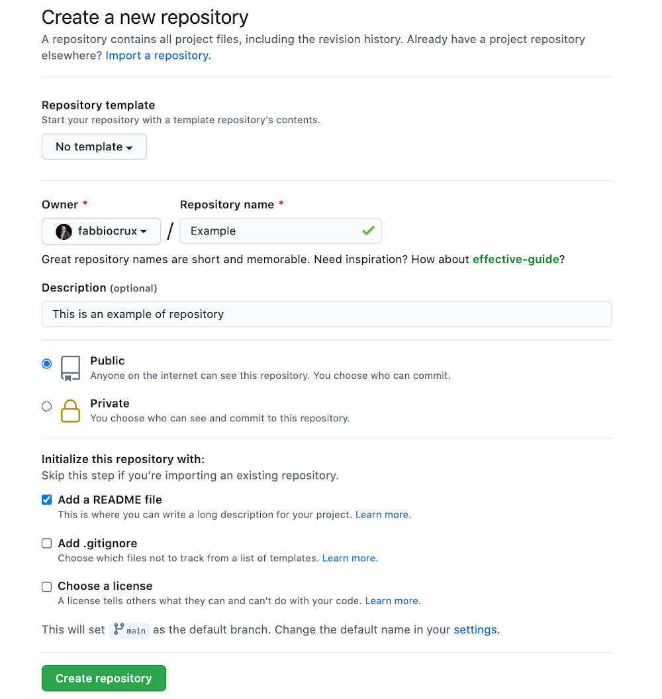

Chapter1 Understanding the software Git and Github and Rstudio Cloud
1.1 Presentation
Setup 1 (Reccomended):
Github account
- Go to the github plateform: https://github.com/
- Create an account using your UL email.
- Recommendations:
- This site will present the projects that eventually you will work. Make it professional!. You will able to valorise in your cv.
- Put your photo, a description of who you are.
- Use a profesiona nickname.
- We suppose that you have created your account (following the steps),
- Go to http://github.com, create a new repository (call it like - ‘
Reproducible-example-ENSGSI-2021’ or something similar), making sure it is public and you check the box that says ‘initialise new repository with a README’ — click ‘create repository’ at the bottom

- The new repository (‘repo’) will be created and this is where you will be able to store all you code online. You will notice that a
README.mdmarkdown file has also been created. This can be edited to tell people what they are likely to find in this repository.
- Give some details on the
1.1.1 RCloud
1; Once you have an account on github, go to https://rstudio.cloud/plans/free
1.2 Task for ARCHE
No, easy.. we are cool in this sprint :)